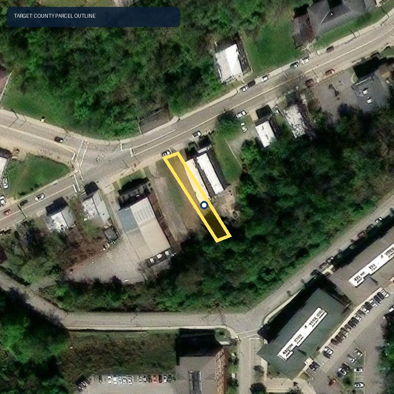

LotLine · bounded multimodal evidence
A real parcel image that can disagree—and abstain
Centre Ave · County parcel geometry + aerial imagery + fixed-category Claude observation

Esri World Imagery + Allegheny County OPENDATA parcel outline · retrieved 2026-09-27 · imagery acquisition date not provided · outline is not a survey
Hash-bound Claude read · enum-only output
Structure visibility: unclear
SurfaceMixed cover
Street contextStreet edge visible
Image qualityAdequate for coarse categories
LimitsDate unknown · shadows · tree cover
Cross-modal result: the image does not resolve the demolition-labelled record against the active condemned record. Both remain visible; the parcel stays deferred.
96/96hash-verified reads
36current review flags
45current abstentions
What AI adds: a visual–record discrepancy queue the records-only pipeline cannot produce. What it cannot do: prove vacancy, demolition, recency, zoning, title, hazards or development feasibility. The deterministic engine is unchanged.